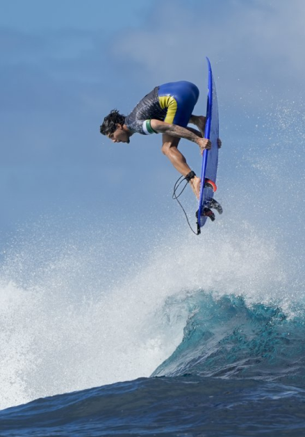
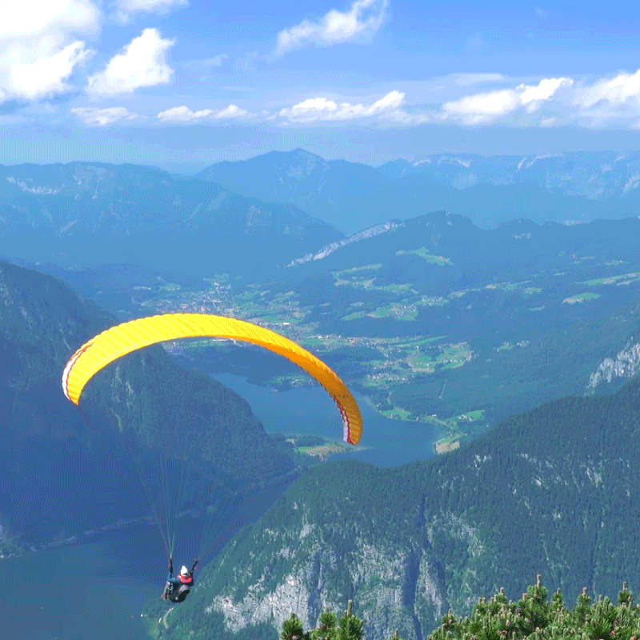
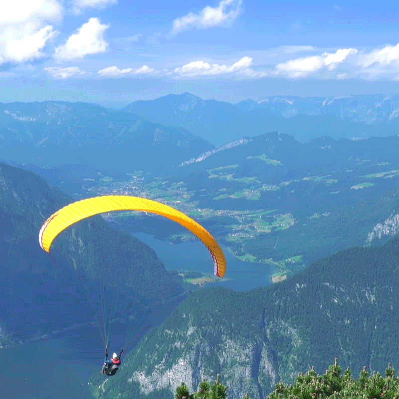
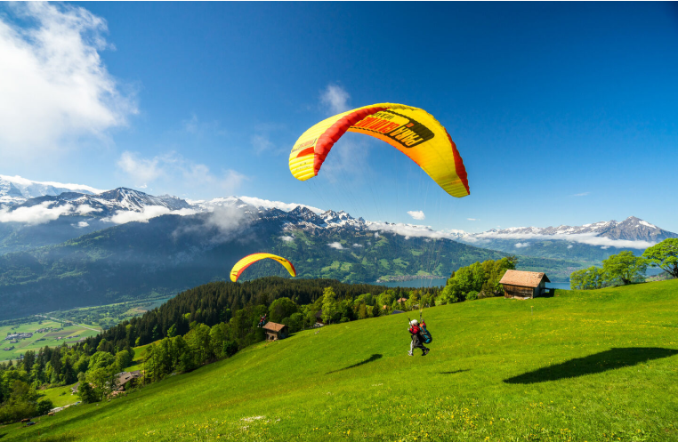
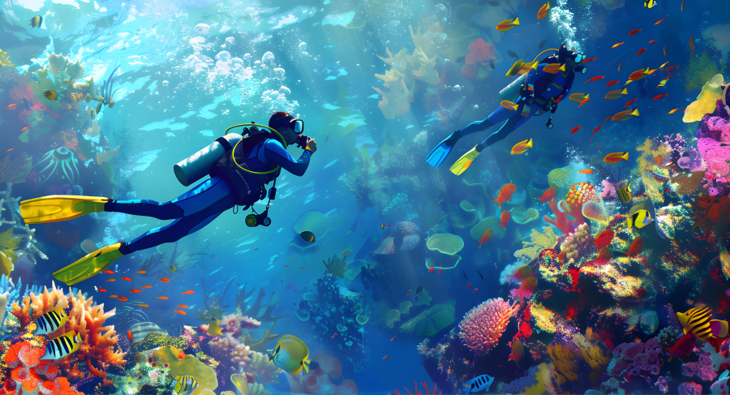
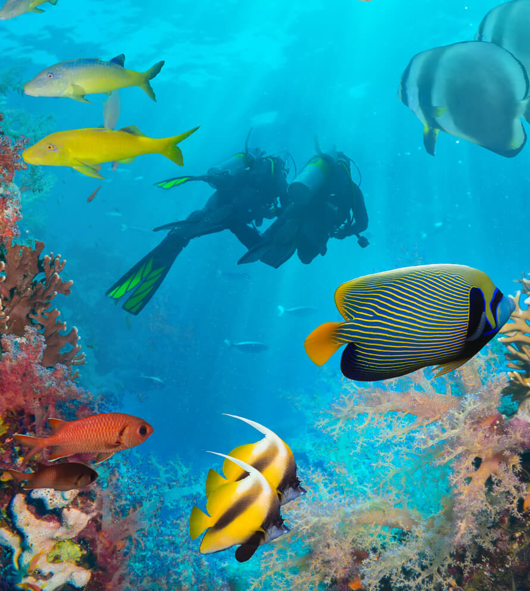
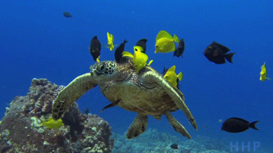
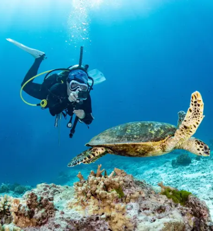
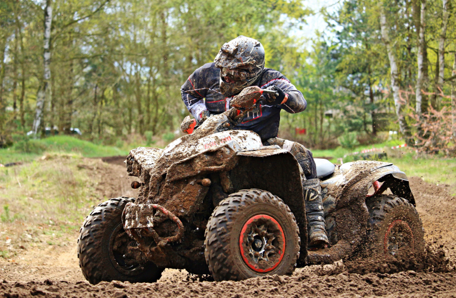

본문 영역
-
surfing
Jeju Island boasts beautiful natural scenery and is known as a great place for surfing. There are 11 places in Jeju Island where you can enjoy surfing, including Hyeopjae, Hamdeok, Gimnyeong, Woljeong, and Pyoseon Beach, and even beginners can enjoy surfing.
When enjoying surfing in Jeju Island, it is a good idea to know the spots so that you can enjoy surfing according to the tide. It is also important to respect the locals. -

-

- 
-
What is it like surfing in Jeju Island?
Jeju Island is surrounded by sea on all sides, making it a great surfing spot where you can enjoy the waves coming from all directions, including the north swell, south swell, and east swell, depending on the time of year.
-
 
 -
paragliding
What comes to mind first when you think of Jeju Island? The nature that you can't easily experience in the city comes to mind first. If you enjoy that nature from the sky, it will be an even more special trip.
Enjoy paragliding, which you thought was only available in Danyang or Gangwon-do, where the mountains are high and dense, in the vast nature of Jeju Island.
-
blow away all your stress by riding a hang glider!
Hang gliding, looking down from 18 meters above the ground, the beautiful view of Mt. Halla, Jeju Sea, and Soin-guk Theme Park. The wide tangerine fields are just as beautiful as the view from a helicopter, and it is even more fun when the wind blows, making it a sport that can be enjoyed by people of all ages and genders. The beautiful scenery and the feeling of floating lightly without holding anything are so exhilarating that you can freely throw yourself into the vast land that stretches beyond the horizon, and even willingly accept and enjoy that feeling.
- 
-
diving
This is a scuba diving experience that takes place from the sea in front of Natural Monument No. 18, Seomseom Island, to the coral protection areas of Beomseom Island and Munseom Island in Jeju Island. You can see coral reefs and schools of fish with an experienced diver.
- 
- 
- 
- 
-
Colorful coral reefs and a variety of fish at the bottom of the sea!
There will be lots of new and beautiful things. It is an amazing world that you can never see unless you jump into the ocean.
Don't worry if you don't have experience. Experienced divers will guide you safely. So, put your worries aside and come with excitement.
-
-
Atv
Enjoy Jeju's symbolic Oreum with a thrill unlike any other. Drive a mountain bike at high speed through the lush forest. Every moment will be thrilling like a scene from a movie. Sometimes, you will feel relieved when you have fun while blowing dust. It is also very satisfying to enjoy it as a stress reliever.
-
Exciting emotional race with brisk engine sounds
If you ride an ATV on a wide grassland, you can enjoy the thrill of off-roading and the beautiful scenery of Jeju at the same time, which is attractive. Enjoy the freedom while running fast through the forests of Jeju, famous for their clean and clear air. A new kind of pleasure awaits you that you can't feel in the city. I recommend this as the coolest and most unique way to enjoy the beauty of Jeju.
- 